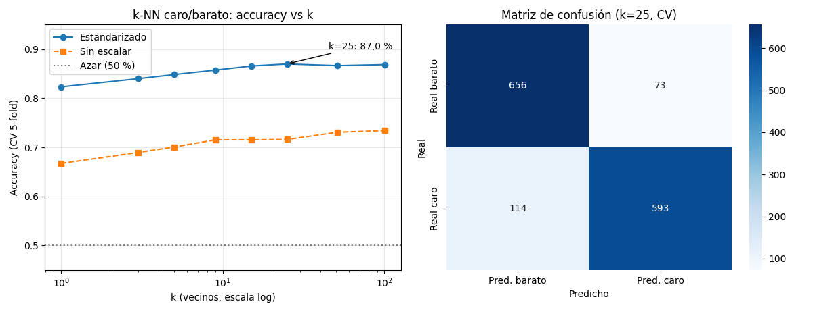

Unidad 8 · Clasificación · Lección 0033
Clasificación con k-NN: caro o barato según sus vecinos
Win de hoy: predecir si un auto es caro (Price > 9.900, la mediana) con k-NN: k=25 acierta el 87,0 % (CV 5-fold), y sin estandarizar cae a 71,5 %.
1 · Clasificar ≠ agrupar: ahora hay respuesta correcta
En clustering (U7) no había etiquetas: inventábamos grupos. En
clasificación
cada auto trae su etiqueta y el modelo aprende a predecirla en autos nuevos. Nuestro target:
caro = Price > 9900 (mediana → 49 % caros, casi 50/50, el azar acierta 50 %).
Predictores: Age_08_04, KM, HP, cc, Weight.
k-NN es el clasificador más honesto: para un auto nuevo, busca sus k vecinos más parecidos
(distancia euclídea, como en la lección 0028) y vota la mayoría.
Sin fórmulas, sin entrenamiento real: el «modelo» es la base de datos.
2 · Eligiendo k: ni nervioso ni dormido
k=1 copia al vecino más cercano (nervioso: copia hasta el ruido). k=101 promedia medio dataset (dormido: ignora lo local). El punto dulce se elige con validación cruzada, nunca mirando el train.

Dos lecturas: (1) k=25 gana (0,8698) pero k=15–101 empatan (~0,866): meseta, no pico — elegimos 25 sin drama. (2) Estandarizar vale +14 puntos: sin escala, KM (miles) grita y las demás susurran, igual que en clustering.
Regenerar la figura (mismo resultado versionado en assets/img/toyota/):
python scripts/make_figures.py --only clasificacion-knn3 · Matriz de confusión: dónde se equivoca
El 87 % global esconde dos errores distintos. La matriz de confusión los separa (filas = real, columnas = predicho):
| Pred. barato | Pred. caro | |
|---|---|---|
| Real barato | 656 ✓ | 73 (falsa alarma) |
| Real caro | 114 (se le escapa) | 593 ✓ |
El modelo «pierde» más caros (114) de los baratos que infla (73): es conservador para decir «caro». Si tu negocio castiga más un error que otro, esta tabla —no el accuracy— decide.
4 · k-NN en 10 líneas (reproducí el 87,0 %)
import pandas as pd
from sklearn.preprocessing import StandardScaler
from sklearn.neighbors import KNeighborsClassifier
from sklearn.model_selection import cross_val_score, StratifiedKFold
df = pd.read_csv("../ToyotaCorolla.csv")
cols = ["Age_08_04","KM","HP","cc","Weight"]
X = StandardScaler().fit_transform(df[cols]) # ¡sin esto cae a 71 %!
y = (df["Price"] > 9900).astype(int)
cv = StratifiedKFold(5, shuffle=True, random_state=42)
print(cross_val_score(KNeighborsClassifier(25), X, y, cv=cv).mean().round(4)) # 0.8698Tu turno: probá predecir Fuel_Type (Petrol vs Diesel) con el mismo código:
da 99,6 %… sospechosamente perfecto. ¿Por qué? cc y Weight casi delatan el combustible.
Un accuracy altísimo a veces avisa «el target estaba regalado», no «soy un genio».
5 · Quiz (auto-chequeo inmediato)
6 · Fuente primaria y cierre
Para profundizar (1 fuente): James et al., An Introduction to Statistical Learning — cap. 2.2.3 y 3.5 (k-NN). Más contexto en RESOURCES.
Siguiente: 0034 · Regresión logística y ROC: probabilidades en vez de votos, y cómo elegir el umbral.